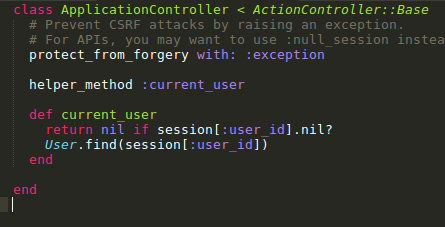

Sivut hienoiksi
Tässä osassa muokkaamme viewejä ja asennamme Bootstrap-tyylikirjaston
Sivut ovat nyt aika rumat. Emmehän edes tiedä, onko joku kirjautunut sisään vai ei. Muokataan viewejä niin että näkyvillä on Kirjaudu sisään -nappi jos kukaan ei ole kirjautunut, ja Kirjaudu ulos-nappi jos on. Haluamme myös näkyviin kirjautuneen käyttäjän nimen. Asennetaan ensin kuitenkin Bootstrap-tyylikirjasto, sillä siitä tulee olemaan paljon hyötyä tässä osassa. Lisätään Gemfile-tiedostoon
gem 'bootstrap-sass'
group :development do
gem 'rails_layout'
end
Gemit asennetaan komennolla
bundle install
Asennetaan Bootstrap ajamalla
rails generate layout:install bootstrap3 --force
Käynnistä serveri sen jälkeen uudelleen. Katso selaimesta sovellusta ja huomaa ero!
Muokataan navigaatiopalkkia
Sivun yläreunassa on nyt musta navigaatiopalkki. Loogisinta on ilmoittaa navigaatiopalkissa kirjautuneen käyttäjän nimi. Myös Kirjaudu Ulos- ja Kirjaudu Sisään -napit sijoitetaan navigaatiopalkkiin.Keskustelukysymys: Miten saamme tietää tällä hetkellä kirjautuneen käyttäjän?
Vastaus current_user -metodi ApplicationControlleriin. ApplicationControllerin metodeita voidaan kutsua muista controllereista. Helper_method-määrityksen avulla current_user -metodia voidaan kutsua myös vieweistä. Jos et jaksa koodata niin kopioi täältä Kirjautuneen käyttäjän nimi näkyviin
Navigaatiolinkkien view on tiedosto app/views/layouts/_navigation_links.html.erb. Vieweihin saa kirjoitettua Rubyn ehdolauseita <% %> -tagien sisälle. <%= %> -tagi saa sisällään olevan sisällön näkyviin sivulle.
Kirjaudu sisään / Kirjaudu ulos
Saat selville rake routes -komennolla chat-hakemistossa sisäänkirjautumisen ja uloskirjautumisen reitit (siis esim signout_path). Esimerkiksi uloskirjautumislinkin koodi on siis
<%= link_to "Kirjaudu ulos", signout_path, class: 'navbar-brand' %>
Rakenna itse sisäänkirjautumisen linkki ja sijoita molemmat linkit _navigation_links.html.erb-tiedostoon oikeisiin kohtiin. Huom. lisää else-lause ifiin!